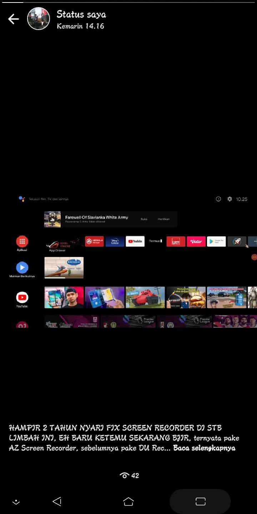

Bjir lah, pengen lihat SW sendiri malah reboot Kronologi: Disaat lagi lihat SW yg sya kirim, yaitu berupa screen record STB limbah yg baru fix nya kemarin pake AZ Screen Recorder Tiba² hp nya malah reboot Dan akhirnya bisa booting dengan normal sampai menu, dan tidak ada hal yg parah lagi
